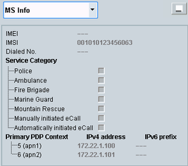

To display this area, select "MS Info" in the field below the event log area. Press the button to the right to maximize the "MS Info" area.
The information shown in the MS info area is retrieved, e.g., during location update in the CS domain and attach in the PS domain. For configuration of requested data, see "Requested Mobile Data".

- TAC: 8-digit type approval code
- SNR: six-digit serial number.
- Spare: one-digit spare bit
- MCC: three-digit mobile country code
- MNC: 2- or three-digit mobile network code
- MSIN: 10- or nine-digit mobile subscriber ID
Number dialed at the mobile station (call from MS).
Remote command:Indicates the category of emergency call.
Remote command:Displays the activated PDP context. Multiple PDP context is supported.
Returns the access point name used by the MS during a packet data connection.
Remote command:Displays the IPv4 address and/or the IPv6 prefix that have been assigned to the MS by the R&S CMW.
The MS indicates whether it supports IPv4 only or IPv6 only or both. Depending on this information, the R&S CMW assigns either an IPv4 address or an IPv6 prefix or both and displays the assigned values.
Remote command: